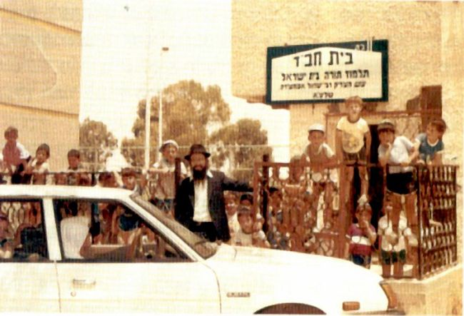

Dignity and Modesty Befitting the Daughter of a King
Rabbanit Esther Edery a ” h, the youngest daughter of the holy Baba Sali, zt ” l, was a shlucha of the Rebbe in Netivot. * The small book from which she read to her father; the shidduch with the Lubavitcher bachur that was concluded in minutes; the tremendous success in doing the Rebbe ’ s mivtzaim; yiras Shamayim and modesty. * Words cannot do her justice, but we can try to learn from her example .
By M. Jerufi, M. Kupchik

Rabbanit Esther Edery a”h, shlucha in Netivot, was holy from birth as the youngest daughter of the holy Rabbi Yisroel Abuchatzeira, known as Baba Sali zt”l (d. 1984), and the only daughter of Rabbanit Simi Simcha, may she live long.
She was born on 15 Shevat 5716 in Rissani in Tafilalet, Morocco in the home that served her grandfather, the Abir Yaakov zt”l, and his son, Rabbi Masoud zt”l, and Rabbi Dovid, Hy”d. She was born after her father returned to Morocco in 5714 after living in Eretz Yisroel for three years. He left because he did not want to accept the position of Rav of Rishon L’Tziyon. His older daughters remained and he was accompanied by his son, his current successor, Rabbi Boruch, while his oldest son, Rabbi Meir, served as his successor in the rabbinate in nearby Erfoud, where most of the community of Rissani moved after Rabbi Dovid met his untimely end and was killed Al Kiddush Hashem.
RESURRECTION OF THE DEAD
When Esther was two, her nanny took the baby up to the roof to hang up the laundry. While the nanny was distracted, the toddler went over to the skylight, took off the cover, and fell into the house, the equivalent of two stories in today’s houses.
When Baba Sali heard the thud, he got up and picked up the baby who was not breathing and he told his grandson calmly, “There is nothing to worry about, she will live.” Within a few moments, the baby returned to life.
The small community that remained in Rissani did not have schools, but Baba Sali did not send his daughter to learn in nearby Erfoud. Instead he had one of the righteous women in town teach her how to read and write, t’filla, Halacha, minhag, and other basics.
PERSONAL AIDE TO THE TZADDIK
In the years prior to the big aliya, her father had many personal aides. When he left the house, he was surrounded by students, to the point that unlike her, his older daughters barely knew him and were bashful of him. However, now, upon returning to Rissani that had almost no Jews left, his youngest daughter Esther was his right hand.
In 5724, when she was eight, he returned to Eretz Yisroel to settle there and lead the Edut HaMizrach in their traditions. She now met her sisters, most of who were married by the time she was born.
Here too, she remained inside his inner circle and was the one who fulfilled all her father’s wishes humbly, devotedly, and speedily. He was always pleased with her. After they returned to Eretz Yisroel, the house became a beacon to the many people who came to bask in his light. Meals had to be prepared and numerous guests hosted. She did this modestly and graciously while her father was in his room, learning and traveling the higher spheres. If an important guest arrived, only Esther could enter his room and inform him of that. She did not complain about the workload but felt this was her destiny.
Every morning, soon after dawn, her father would call her and she immediately stood ready to answer “amen” to his morning blessings. Even if the meal the night before had ended late, she would rise like a lion. Afterward, she would bring his tallis and t’fillin from the living room; nobody else was allowed to do so!
One morning, after finishing helping her father who went to daven, she dozed off on the living room couch, but he immediately called out, “A Jew gets up in the morning to serve Hashem; can he go back to sleep?!” Since then, until she became sick, she rose very early in the morning and did not go back to sleep during the day.
Her father loved her greatly and looked out for her. She reciprocated and was devoted to him with utter bittul, with love suffused with awe.
THE QUIET GROOM
When she became of age to marry, the suggestion was raised for her of the bachur, Rabbi Yashar Edery, who had moved to Eretz Yisroel from Morocco when he lost his holy father, and learned in Chabad yeshivos. Baba Sali heard that they said in Yeshivas Tomchei T’mimim that out of those who came from Morocco, there was nobody like him, and he wanted to meet him. Although they heard other suggestions about outstanding young men, he showed preference for this suggestion.
Rabbanit Simcha Weitzman and her husband were involved in the shidduch and tell us these details:
“We were asked to make the shidduch. The Rabbanit knew that we are from Chabad and had been asked to get involved specifically in a shidduch for her. For us, it was natural for my husband to look for a suitable bachur in the yeshiva in Kfar Chabad. At first, the idea came up of a bachur who was not Chabad and then we suddenly had the idea of suggesting a Chabad bachur. Then we had a dilemma.
“My husband went to Baba Sali and described the bachur and Baba Sali asked how long my husband knows him etc., and whether he is connected to the teachings of the Baal Shem Tov. When my husband said yes, and said that the bachur learns in a Chabad yeshiva, Baba Sali gave his consent. We see that the Baba Sali’s connection to Chabad was a soul connection, connected to disseminating the wellsprings of the Baal Shem Tov, Chassidus.”
The bachur went to Baba Sali for the latter to form his impression of him. When he entered the room, his future father-in-law asked him to sit next to him. He then took his hand and examined the palm for some time. Then he called to his wife to bring arak and they drank l’chaim with the highly refined bachur who had just become a chattan. It was only afterward that he said the chattan should see the kalla for a few minutes.
An engagement party was held a few days later, with Baba Sali sitting in his room immersed in Torah study and holy service, whilst at the head of the table, Baba Meir, the kalla’s brother, sat as the main representative of the family. At one point in the ceremonies, he said, “We have a younger sister and we need to be grateful to her for absolving us of serving our father so that we can sit and devote ourselves to Torah and Avoda.”
During the shiva, Rabbi Aharon, the son of Baba Chaki, said that at the engagement party, the family sat at the table and sang and said words of Torah while the groom sat silently. One of them went in to the Baba Sali and said, “What kind of chattan did you take? He doesn’t say a word!” His grandfather said, “You should know that I did not take him because he can talk; I took him because of his silence and because of his Torah.”
Sometime later, Baba Sali explained why he chose this young man. “I greatly preferred choosing someone who learns in a yeshiva that is run according to the ways of the holy Baal Shem Tov,” and as he said about himself, “From the age of 15, I connected to the ways of the Baal Shem Tov.”
He even said, “He was revealed to me, and with my own eyes I saw the holy Baal Shem Tov, and he did not say anything to me. I saw the Mezritcher Maggid and he spoke to me but I am not permitted to reveal anything.”
Much has been said about his relationship with the Rebbe, especially how he supported the Chassidim’s faith that the Rebbe is Moshiach.
THE WEDDING
Baba Sali did not want to partake of any gashmius pleasures and considered participation in weddings as a megusham experience. On the day of his youngest daughter’s wedding, he said he did not feel well and did not think he would participate. His wife Rabbanit Simi said, “Perhaps you would like for me not to attend too …” Hearing the sorrow in her voice, he immediately changed his mind and said he would go to the chuppa.
An acquaintance told the kalla that she wouldn’t be attending the wedding. To the kalla’s consternation, she said she was married for ten years without children and she was sure that Esther would have a child within a year, and therefore, she did not want to attend the wedding “and intrude with her disturbing thoughts…”
The kalla sadly told this to her father who said, “Go and tell her to come to the wedding and as she said, within a year, you will have a son and so will she,” and so it was.
Esther’s friend Mrs. Simcha Weitzman revealed an amazing nugget that shows Esther’s soul connection with Chassidus without her conscious knowledge, before she married. “Rabbanit Esther told me that before she knew of Chabad, Baba Sali would give her excerpts to read from a certain holy work. When she married and became Lubavitch, she realized it was the Tanya. ‘I would read a section from there to my father every time,’ she told me in amazement.”
DEVOTED TILL THE END
Even after she married, she stood at the ready to help her father from the early morning hours, while her husband went off to learn, until the evening. Even when they raised children, they would go straight to their grandfather’s home after school. (Six of her 12 children grew up in the presence of their grandfather. Interestingly, Baba Sali had other Lubavitcher grandchildren because his granddaughter, daughter of his first wife, married the son of a shliach in Morocco).
Esther’s husband, Rabbi Yashar Edery, relates, “She was unusually devoted to him. She intuited what he wanted without his having to say, and ‘greater is the service of her (the Torah) than the study.’”
Her older brother, Baba Meir, highly esteemed her and the fact that she merited such signs of closeness from their great father and that she had the privilege of serving him. He was grateful to her for this because otherwise, he and his brothers would have had to be there, instead of her. When Baba Meir passed away nine months before Baba Sali, she mourned greatly and referred to him always in terms of respect.
Until Baba Sali passed away on 4 Shevat 5744, she served him and honored him in a truly rare fashion.
SHLICHUS
Over the years, her husband founded and enlarged the Beis Yisroel schools in Netivot, along with carrying out the Rebbe’s shlichus with the encouragement and aid of his great father-in-law and the Rabbanit.
Esther, as an eishes chayil, was devoted to her husband and their shlichus in Netivot. As he explained, “I came from Kfar Chabad and was not really up to speed in all sorts of matters … and she devoted herself to helping out with everything that we now have here in Netivot. When we speak of the mosdos, they include: the Talmud Torah (elementary school) for boys, four preschools, daycare, a kollel, and a Chabad House. Everything here is thanks to her!”
Mrs. Weitzman tells us about Esther’s involvement and work as a shlucha and how she was always at the ready for any matter of holiness. “As the wife of a Chabadnik, spreading the wellsprings flowed in my veins, but when Hashem made a miracle and the shidduch worked out – we arranged the match of Rabbanit Esther and Rabbi Yashar – right after the wedding, she joined in. It was amazing to see how she had turned into a Chassida so that we did nearly all of the Rebbe’s instructions together, such as going from house to house to register people for letters in the Torah scroll…”
The fact that Mrs. Weitzman had such a prestigious partner in her work helped a lot. “We didn’t have to say anything because the moment we arrived, and Baba Sali’s daughter was with me, it all went smoothly. When we went on mivtza Neiros Shabbos, we went from house to house and asked the girls in the family to light candles and they immediately accepted it.
“She worked on mivtzaim with enormous devotion. This did not detract one iota from the needs of Baba Sali, who she continued to serve. The fact that the Rabbanit became part of the Chabad circle in the city added a lot of honor and prestige to the entire city.
“I merited to be by the Rebbe for Purim, and received a personal directive from the Rebbe to establish the Chabad Talmud Torah in the city. Rabbanit Esther joined the effort, and immediately after Pesach, we began to implement the mission that the Rebbe had placed upon me. She went with me from house to house, in order to register children and open a gan and elementary division, and she was one of the big supporters!”
DIGNITY AND MODESTY BEFITTING THE DAUGHTER OF A KING
Even after the passing of her father the tzaddik she chose not to stand out. Although she lived in the same house as her mother, the Rabbanit, and thousands flocked to their holy home, she kept to herself on the second floor and few knew her. Many thought that the Rabbanit’s daughter was the cleaning lady.
“She is holy from birth,” her husband eulogized her. “She had no connection to things or desires of this world, to all the things that others are involved with. What interested her was her father and, after she married, she devoted herself to her husband, children and grandchildren.”
She was completely removed from mundane matters, which did not interest her at all, and she never went on vacation. She left Eretz Yisroel only two times, once to visit the graves of her ancestors in Morocco, and she once traveled with her mother to the Rebbe who treated them with great respect. Her friend, Simcha Weitzman, says that she heard from her friend, an eye witness, that Esther went past the Rebbe and the Rebbe kept looking after her even after she had passed and disappeared from view.
Even after the passing of her father, she continued with her Chassidic piety and was a true model of total bittul. Her son Menachem relates:
“What negation of self, Master of the Universe! The daughter of Baba Sali with all her humility, but to that extent?! I saw how before every member of the family who went to her, she humbled herself as if she were dust, even towards the nephews who came to visit. She was older than them, still, this daughter of the tzaddik would say with such humility, ‘Bring me a cup of water from your hand, and bless the water that I should have a refua shleima.’ When her brother, my uncle, came, she asked him, ‘Place your hand on my feet so I can stand on my feet.’ That is all she wanted.”
“This absolute bittul of hers is what personified her. That’s how we grew up. It’s what we saw; just humility and bittul, not to feel anything about yourself. Whenever we thought, perhaps as grandchildren of the tzaddik we have some right to something … they would immediately bring us down to earth. ‘Nothing! It’s not a privilege; it’s an obligation! Don’t credit yourselves!’ We saw a living example of this in our father and mother.”
Her husband also noted:
“As the daughter of a tzaddik, you would think she would naturally have some pride, ‘I am the daughter of Baba Sali!’ But I can testify and so can everyone in the family, she did not have a smidgen of pride. She was utter bittul, humility, simplicity.”
PARAGON OF CHESED
The Rabbanit did not like nor want gifts and was satisfied with little. When her husband, after spending a month at the Rebbe, had someone buy something for her and brought it to her as a gift, she looked for the wife of a Torah scholar to give it to.
However, when it came to others, she thought about them and their needs and showered them with good things. Her husband said that every Friday she woke up early and baked challos, rolls and cakes for Shabbos. Many people considered it a z’chus to take from her baking, taste it and give it to their families. “I know a family where the mother died from a sickness and left nine young children. For fifteen years, until they left Netivot, Esther prepared a tray for them of fresh cakes and rolls. On fast days, when the custom in our home is to bake something for after the fast, she did not only bake for us, but baked for those orphans too. Once a week, she went shopping for items she distributed to the needy on Fridays.”
There are those who do chesed only with those who are far removed from their immediate orbit, but that’s not what Esther did. Her husband says that chesed was done within the family unit too. For example, when she was well, the children and grandchildren, most of who lived in Netivot, would come every day to eat at their grandmother’s home. The house was an open house, and of course, on Shabbos too.
“I can tell you,” said her husband, “that what Chazal say that in the period before Moshiach comes ‘a daughter rises against her mother and a daughter-in-law against her mother-in-law,’ did not pertain to her at all. Even the daughters-in-law loved her dearly. She was like a mother to her daughters-in-law and they called her Ima.”
DEVOTED TO THE REBBE’S INYANIM
Rabbanit Esther personally prepared food for farbrengens. Mrs. Simcha Weitzman describes how she was constantly cooking for all the farbrengens that took place in the shul for men, and it was all done in a quality way and generously. As for the women’s farbrengens, when they shared the work, she took part and every Shabbos Mevarchim she hosted a farbrengen in her home. “She was the focal point for all the Rebbe’s inyanim; it’s indescribable.”
Rabbanit Esther was particular about the learning schedule established by the Rebbe. “She began the day with Chitas and then did other things,” emphasized Simcha.
Every week, there was a shiur in her home which Mrs. Weitzman gave. Esther prepared, set up and served, always silent and with a listening ear, but she did not want to hear lashon hara and rechilus. Women would come before the shiur began in order to sit with her and enjoy her wisdom and refinement.
“Over the years, I gave a shiur for women in her house on the Rebbe’s sichos. She prepared special refreshments for the shiur. On Chassidic dates she held farbrengens. I gave the Torah content and she prepared everything else. 70-80 women could show up and she did everything. She also prepared the hilulot for the Abuchatzeira dynasty. Sometimes, the dates would converge and she would prepare separately for each. She would send women who began to get involved in Chassidus to me so I could write to the Rebbe with them. She contained within her treasures that are indescribable and was utterly devoted to the Rebbe’s inyanim.
“As the wife of a shliach she went all out until she did not feel well. The beautiful thing was how supportive she was of her husband’s work.
“I think that one of the successes of Chabad in Netivot is that the daughter of Baba Sali was the one who set the tone. Think of the kabbalas ol of this girl, raised as an only daughter, daughter of a tzaddik, who received from him above and beyond, simply doing what her husband wanted with perfection and helping him so there would be more and more spreading of the wellsprings!”
STILL WATERS RUN DEEP
Their son, Menachem Edery, relates that during the shiva he suddenly realized that although his mother arrived in Netivot a little less than 50 years ago, most of the people in the city never saw her.
“Many people were drawn close to the Creator thanks to my mother’s silence, not because of her power of speech. She didn’t talk, give lectures or shiurim. Even when she had a shiur in the house, she didn’t talk. She just sat and looked at the women. They looked at her and saw the Sh’china and that was mekarev them to Hashem. Nothing more was needed. One word from her did it all.”
He told of an intellectual woman with an advanced degree who held a respected position at her work. She met his mother four years ago and she would come to shiurim.
“My mother would just say a word to her every week, bless her, strengthen her emuna, plant hope in her heart, shower her with love, and this woman transformed her life. She became a baalas teshuva, acquired emunas tzaddikim and went to their graves. She would pray for the Rabbanit when she got sick, day and night, and said to her, ‘Rabbanit, whatever I am is to your credit. I had a father and mother and never received love. Even from my husband I didn’t know what it was to receive love. You infused my heart with life just with your gaze! Thanks to a good word you would say to me.’ And when my mother was sick, the woman spent hours at her side and went to pray for her at the grave of my grandfather, with the faith that my mother had awakened in her.”
BEARING HER SUFFERING
She was careful with even the smallest details of Halacha, like not speaking mundane talk on Shabbos. She fasted on all the fast days even though her father told her in her youth, “Your fasts are on my shoulders.” She said this was the one time she didn’t listen to him.
In her last two years, she suffered greatly from her sickness but fasted on Yom Kippur, saying that she did not suffer in order to be prevented from fasting. When the fast was over and she sighed a heartrending sigh, that’s when they found out. As the daughter of someone who invited suffering, she did not complain and accepted it with love. Even when asked whether she was in pain, she would say, “Why do you need to know … G-d knows.” Her suffering was bitter and hard, it was obvious that she suffered and atoned for the generation.
Even when she suffered greatly, daily, for two years, her husband noted her faith and fear of Heaven. “Not for a moment did she lose her hope and trust in G-d. She would always encourage others. She had a women’s shiur in our home every Monday, with 50 women. She would strengthen them and was strong in spirit till the final moment.”
Simcha, who gave the shiur, added, “When she wasn’t doing well, I knew the shiur had to be held elsewhere. When she found out about this, she adamantly refused and asked that they come to her. Even after her passing, from the following week, the shiur continued in the Rabbanit’s home.”
ON THE BAAL SHEM TOV’S YAHRTZAIT
On the second day of Shavuos, she requested that they “call Ima, because my brother the Baba (Meir, who had passed away years before) had come to her (apparently to welcome her).” In those moments of transition from one world to the next, she did not forget her modesty and asked that her feet be covered.
That wasn’t the only time. Her husband says, “Tznius was in her blood. We saw this especially during her terrible illness. In the final week, when she could not move, stand or speak, when it had to do with her kerchief or her legs, she would signal, and her last words were about this.”
She passed away on 7 Sivan at the age of 62. Her passing left a huge void. One of the descendants of R’ Aharon Abuchatzeira said to Esther’s son, “I felt, when I looked at your mother, that the Baba Sali did not pass away. I could not raise my head and look her in the eyes. Now that she passed away, Baba Sali has also departed this world.” He expressed the sentiments of many people.
Said Mrs. Weitzman, “One of her great merits is that she raised a Chassidic generation. Many rabbanim and communal people said that comment during the shiva and blessed the home that it continue to spread the teachings of Chassidus. We are in an era in which everyone understands that this is the way.”
In Netivot they are building a large building which will contain a shul, a mikva, a kollel, and is now in the finishing stages. It will be called “Heichal Esther” after her.
Whoever knew her is pained by her passing and waits to see her rise up with the fulfillment of the promise, “Arise and sing those who dwell in the dust,” and as it says in the Zohar that tzaddikim and tzidkaniyos arise immediately. May this happen with the hisgalus of the Rebbe Moshiach Tzidkeinu, now.
Beis Moshiach (staff). "Dignity and Modesty Befitting the Daughter of a King." Beis Moshiach, no. 1129 (August 1, 2018).